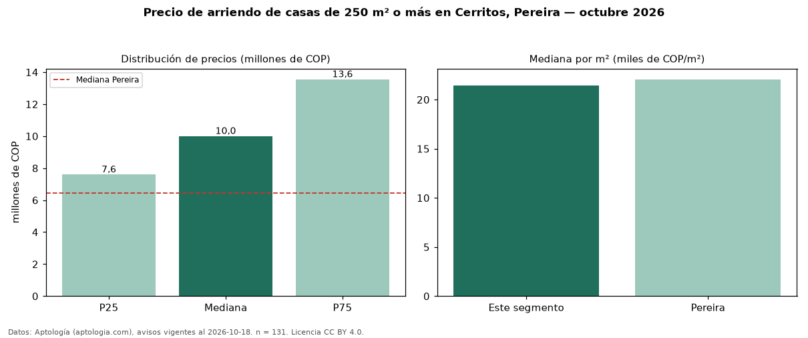

Precio de arriendo de casas de 250 m² o más en Cerritos, Pereira — octubre 2026
Con 131 avisos vigentes, el canon mediano de casas de 250 m² o más en arriendo en Cerritos, Pereira es COP 10 millones al mes. Frente a la mediana de todas las casas en arriendo de Cerritos (COP 8,50 millones, n = 193), queda 18 % por encima; este segmento reúne el 68 % de esos avisos. Por metro cuadrado, la mediana es COP 21.429/m² al mes (n = 126), 10 % por debajo del conjunto de referencia (COP 23.693/m²). El área mediana anunciada es 480 m². El segmento con más oferta es el de 3 o más habitaciones (124 avisos, mediana COP 10 millones). La administración mediana declarada es COP 800.000 al mes (n = 54), aparte del canon. El estrato más frecuente es 6 (87 % de los avisos con estrato). La mitad central de los avisos va de COP 7,60 millones a COP 13,55 millones (razón 1,8), una dispersión moderada. Datos: Aptología (aptologia.com), CC BY 4.0 — https://www.aptologia.com/casas-en-arriendo/pereira/cerritos. Archivos: PDF, CSV con las cifras y gráfica PNG.

| Avisos únicos | 131 |
|---|---|
| Percentil 25 | COP 7.600.000 |
| Mediana | COP 10.000.000 |
| Percentil 75 | COP 13.550.000 |
| Mediana por m² | COP 21.428 |
Fuente: avisos vigentes de portales inmobiliarios recopilados por Aptología, deduplicados (mínimo 30 avisos únicos por celda). Precios pedidos, no cerrados. Fecha: 2026-10-18.